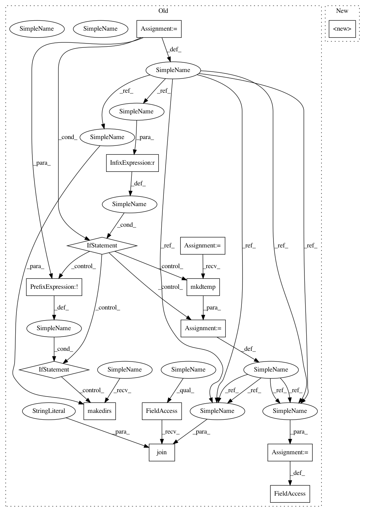

331239d40c0942886649f21ed46fa9ecd8d8255b,deepchem/models/tf_new_models/multitask_regressor.py,MultitaskGraphRegressor,__init__,#MultitaskGraphRegressor#Any#Any#Any#Any#Any#Any#Any#Any#Any#Any#Any#Any#Any#,31
Before Change
self.final_loss = final_loss
self.model = model
self.sess = tf.Session(graph=self.model.graph)
if logdir is not None:
if not os.path.exists(logdir):
os.makedirs(logdir)
else:
logdir = tempfile.mkdtemp()
self.logdir = logdir
with self.model.graph.as_default():
// Extract model info
self.batch_size = batch_size
self.pad_batches = pad_batches
// Get graph topology for x
self.graph_topology = self.model.get_graph_topology()
self.feat_dim = n_feat
// Building outputs
self.outputs = self.build()
self.loss_op = self.add_training_loss(self.final_loss, self.outputs)
self.learning_rate = learning_rate
self.T = learning_rate_decay_time
self.optimizer_type = optimizer_type
self.optimizer_beta1 = beta1
self.optimizer_beta2 = beta2
// Set epsilon
self.epsilon = 1e-7
self.add_optimizer()
// Initialize
self.init_fn = tf.global_variables_initializer()
self.sess.run(self.init_fn)
// Path to save checkpoint files, which matches the
// replicated supervisor"s default path.
self._save_path = os.path.join(logdir, "model.ckpt")
def build(self):
// Create target inputs
self.label_placeholder = tf.placeholder(
After Change
pad_batches=True,
verbose=True):
super().__init__(self, model_dir=logdir, verbose=verbose)
self.n_tasks = n_tasks
self.final_loss = final_loss
self.model = model
self.sess = tf.Session(graph=self.model.graph)
In pattern: SUPERPATTERN
Frequency: 3
Non-data size: 14
Instances
Project Name: deepchem/deepchem
Commit Name: 331239d40c0942886649f21ed46fa9ecd8d8255b
Time: 2017-05-16
Author: peter.eastman@gmail.com
File Name: deepchem/models/tf_new_models/multitask_regressor.py
Class Name: MultitaskGraphRegressor
Method Name: __init__
Project Name: deepchem/deepchem
Commit Name: 331239d40c0942886649f21ed46fa9ecd8d8255b
Time: 2017-05-16
Author: peter.eastman@gmail.com
File Name: deepchem/models/tensorflow_models/__init__.py
Class Name: TensorflowGraphModel
Method Name: __init__
Project Name: deepchem/deepchem
Commit Name: 331239d40c0942886649f21ed46fa9ecd8d8255b
Time: 2017-05-16
Author: peter.eastman@gmail.com
File Name: deepchem/models/tf_new_models/multitask_classifier.py
Class Name: MultitaskGraphClassifier
Method Name: __init__
Project Name: deepchem/deepchem
Commit Name: 331239d40c0942886649f21ed46fa9ecd8d8255b
Time: 2017-05-16
Author: peter.eastman@gmail.com
File Name: deepchem/models/tf_new_models/multitask_regressor.py
Class Name: MultitaskGraphRegressor
Method Name: __init__